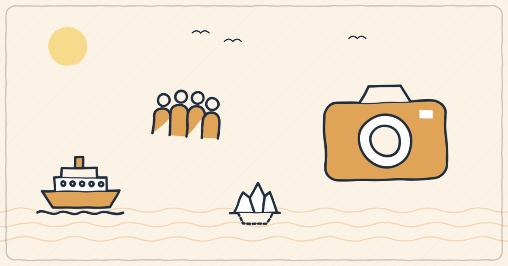

Cruise Photo Manners: Crew, Strangers and Shows
Photograph the ship, the views and your own party freely. Ask before a close-up of any crew member or stranger, never photograph other people's children, and keep cameras out of the spa, changing areas, kids clubs, most casinos and production shows. At scenic moments, take your shot and give up your spot at the rail.

Nobody minds you photographing the ship, the sea or your own family. Cruise photo etiquette only gets complicated when other people are in the frame, and one test resolves nearly every case: if the person would notice you taking the picture, ask first. The rest of this page is where that test applies and the handful of places where cameras simply stay in the bag.
Can I take photos with the crew?
Yes. Crew are in thousands of guest photos a year and most enjoy it, particularly the people you see daily. The cabin attendant, your dining room waiters and a favourite bartender will usually pose for a farewell picture on the last evening.
Ask before any posed or close-up shot; a wave and a raised phone counts as asking. Choose the moment, too. Not while someone is carrying a tray, cleaning a cabin or walking fast to the next job. If the answer is no, accept it: some crew keep their faces off social media for personal reasons, and that is their choice. And never follow a crew member through a "crew only" door, with or without a camera.
Behind-the-scenes galley and bridge tours, where lines still offer them, nearly always allow photos. The ship's own photographers are separate: they will photograph you at the gangway and in the dining room, and you can decline every time with no awkwardness.
Is it rude to photograph other passengers?
It depends entirely on whether they are the subject.
| Situation | Fine | Ask first | Skip it |
|---|---|---|---|
| Wide shot of the pool deck or atrium | Yes | ||
| Sail-away crowd at the rail | Yes | ||
| A stranger's outfit on formal night | Yes | ||
| People eating at the next table | Yes | ||
| Someone in swimwear, close up | Yes | ||
| Other people's children, anywhere | Yes | ||
| A couple who ask you to take their photo | Yes |
When you post group shots online, crop or blur the faces of people you do not know. A dining room photo with your table is yours to share; the strangers behind you did not sign up for it.
Where are cameras not allowed on a cruise ship?
Some zones are off limits for privacy or safety, and ships enforce them:
- Spa, thermal suite, sauna and gym changing rooms. Phones are often banned outright in thermal areas.
- Kids clubs. Parents may photograph their own children at pickup, but not the room full of other people's.
- Casino gaming floor. Many ships restrict photography at the tables; ask the staff before you shoot.
- Production shows. Video recording is usually banned and flash always is. Comedians in particular often ask for no recording at all.
- Medical centre, crew areas and the bridge except on an organised tour.
Listen for the announcement before each show. If it says no photography, that includes your phone held low in your lap, which the performers can see from the stage more clearly than you think.
Glacier days, bridges and sail-aways
When the ship nears a glacier in Alaska, passes under the Lions Gate Bridge leaving Vancouver or slides past South Beach out of Miami, half the passengers head for the same stretch of rail. The etiquette is simple: take your photos, then step back so the person behind you gets a turn. Camp at the rail for twenty minutes and you will feel the glares.
A balcony is the only place to linger without annoying anyone. Full-size tripods belong in the cabin on crowded decks, and selfie sticks stay below head height. Scenic moments are also exactly when people lean out for a shot, so keep your footing and your grip, especially leaving port during the sail-away party when drinks are flowing.
Photographing people in port
Markets, villages and working harbours are not theme parks. Ask before photographing people at work, at home or with their children. Costumed performers, people posing with animals and anyone who sets up a photo spot will expect a tip, usually a few dollars.
Cultural performances come with their own rules. At Indigenous dance presentations in Alaska or ceremonies in the Caribbean, follow whatever the hosts say about photography, and if nothing is said, ask. Some songs and regalia are not meant to be recorded. Planning to fly a drone ashore needs its own research, since many ports and all ships ban them.
A short checklist before you post
- Faces of strangers cropped or blurred
- No photos of other people's children
- Crew names left out unless they said yes
- Nothing from the spa, casino or theatre that the rules prohibited
- Location tags off while you are still on the ship, if you prefer privacy
If you are new to ship vocabulary, the plain-English cruise glossary covers the words you will hear in the photo announcements, from muster station to the lido. And with several port days and excursions ahead, the manners that work on deck work ashore too.
Want this checked for your own sailing? A licensed cruise consultant can price it up and answer questions for free, with no obligation.
Ask a cruise expert →The rule in one line
Ask before a close-up, share the rail, keep the camera out of private spaces, and think about who is in the frame before you post. Your photos lose nothing, and nobody else's holiday suffers for them.
Still wondering?
Will my cabin steward or waiter pose for a photo?
Almost always, and happily, if you ask at a quiet moment such as the last night rather than mid-service. A few crew prefer not to appear on social media, so respect a polite no and do not post names or faces without asking.
Can I photograph people in the pool or hot tub?
Wide shots of the pool deck where nobody is the subject are fine. Pointing a lens at specific strangers in swimwear is not, and most people would object. Children in the pool are off limits unless they are yours.
Why is flash banned in the cruise ship theatre?
It blinds performers mid-routine, which is a safety problem for aerialists and dancers, and it ruins the show for everyone behind you. Most lines ban video recording of production shows too, so a quick curtain-call photo without flash is the accepted limit.